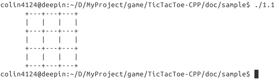

1. 棋盘界面¶
1.1 方法一¶
先实现简单的棋盘，如图 1.1：
分析下，这个界面由四行 +---+---+---+ ，三行 | | | | 以及左边的空白三部分组成，所以把它们分别存储到三个变量里，这样每次输出就不用敲这些长长的字符，而是用容易记住的变量名代替。
#include <iostream>
#include <string>
using namespace std;
int main()
{
// 定义棋盘 board
// 分别存储在 boundary（边界）, bar（栏）以及 sidebar（边栏）的变量里
string boundary = "+---+---+---+";
string bar = "| | | |";
string sidebar(6, ' '); //空白的左边栏
// 输出界面
cout << sidebar << boundary << endl;
cout << sidebar << bar << endl;
cout << sidebar << boundary << endl;
cout << sidebar << bar << endl;
cout << sidebar << boundary << endl;
cout << sidebar << bar << endl;
cout << sidebar << boundary << endl;
return 0;
}
当然，输出界面的代码有很多重复的，可以换成循环输出
for (int i = 0; i < 3; ++i)
{
cout << sidebar << boundary << endl;
cout << sidebar << bar << endl;
}
cout << sidebar << boundary << endl;